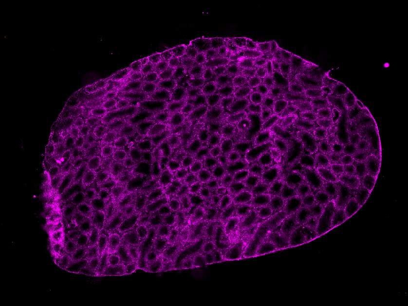
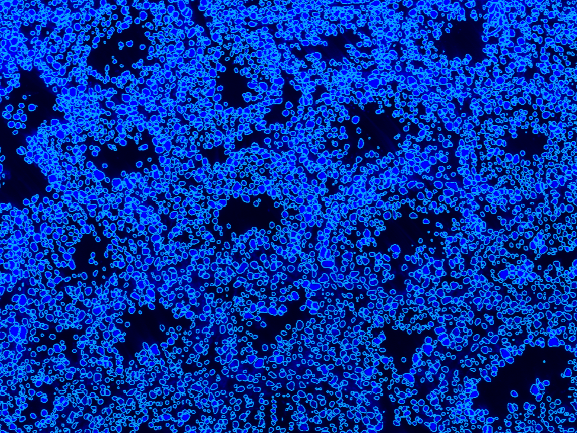

Image processing algorithms
*The interpretation of the Algorithm part is only available in EN.
Tissue segmentation
In SAW, gene expression under tissue is used in downstream analysis. A more accurate tissue segmentation helps to define gene expression under tissue with greater precision. The performance of segmentation is affected by imaging quality (such as clarity), tissue properties (such as discontinuous areas), and the contrast between tissue and the background.
The grayscale image (ssDNA/DAPI-based) or G-channel image (H&E-based) after Contrast Limited Adaptive Histogram Equalization (CLAHE) is used as input to the BCDU-Net (Bi-directional ConvLSTM U-Net) model [1]. The model classifies each pixel as either being in tissue or not. It also fills holes in large areas, resulting in a binarized tissue mask.
If you do not have a microscope image, SAW can still perform tissue segmentation using a feature density map. The algorithm is trained on this type of data. The input feature density map is converted to a grayscale image and subjected to clarity enhancement before being fed into the BCDU-Net model. The remaining image-processing steps are identical to those used in microscope-image-based tissue segmentation.
{kind=link}
Additionally, holes in the tissue mask from the Immunofluorescence (IF) image won't be filled.
| IF Name | IF image (auto-colored in StereoMap) | IF tissue Mask |
|---|---|---|
| AKAP3 |  | |
| TESK2 |  |  |
{kind=link}
{kind=link}
If the segmentation result does not meet your expectations, you can refer to the tutorial of With manually processed files, to perform a new segmentation.
Cell segmentation
SAW provides the option of cell-level analysis based on the cell segmentation result. However, the imaging quality and cell distribution can impact the segmentation performance. To address this issue, we utilize various tissue-type images as input for a deep-learning model to enhance the accuracy of segmentation. This process involves using a digital image clarity-enhanced method and a light model framework to produce the cell segmentation result. SAW also offers a GPU computing option to accelerate the segmentation process.
The input to the BCDU-Net model is a grayscale image after histogram equalization. The model also incorporates BCDU-Net [1], this architecture is beneficial for spatial understanding, predicting patterns, and capturing image context with high parameter efficiency. Finally, utilize the watershed method to acquire more reasonable cell outlines, eliminate small areas of less than 15 pixels, and generate binarized cell masks.

| Cell segmentation in the tissue edge | Cell segmentation in hollows |
|---|---|
|  |
{kind=link}
{kind=link}
If the segmentation result does not meet your expectations, you can refer to the tutorial of With manually processed files, to perform a new segmentation.
Cell border expanding
After tissue staining, only the cell nucleus area will be stained. Therefore, the area segmented by cell segmentation typically corresponds to the nucleus area. It is important to note that the background area outside the segmented cells may also be considered part of the cell. At the same time, there is also the issue of gene diffusion, which leads to a limited number of genes in the nucleus, hindering downstream analysis. Therefore, EDM (Euclidean Distance Map) correction technology is used to expand the boundary of the cell nucleus and simulate a complete cell as much as possible, thereby increasing the number of genes.
| Cell border correcting (pink) in the tissue edge | Cell border correcting (pink) in hollows |
|---|---|
{kind=link}
{kind=link}
The EDM correction algorithm is designed to enhance the cell nucleus's boundary and simulate a complete cell as closely as possible, thereby increasing the number of genes. To achieve this, the input cell segmentation image is converted into an EDM image. The EDM image is composed of the distance from the background pixel outside the cell to the nearest cell. The algorithm calculates the distance from each point in the background to the nearest cell. Based on the threshold (default value is 10, but adjustable), the area within this threshold from the nearest cell is assigned to the cell. In other words, each cell expands its range within the threshold. Within this threshold, any data point that is closest to a cell is assigned to that cell. In other words, each cell extends its range within the threshold.
Cell border expanding is automatically performed based on the cell segmentation result, during SAW count and SAW realign. If you are satisfied with your cell segmentation image, --adjusted--distance in SAW realign will be helpful to skip this step.
Reference
- R. Azad, M. Asadi-Aghbolaghi, M. Fathy and S. Escalera, "Bi-Directional ConvLSTM U-Net with Densley Connected Convolutions," 2019 IEEE/CVF International Conference on Computer Vision Workshop (ICCVW), Seoul, Korea (South), 2019, pp. 406-415, doi: 10.1109/ICCVW.2019.00052.